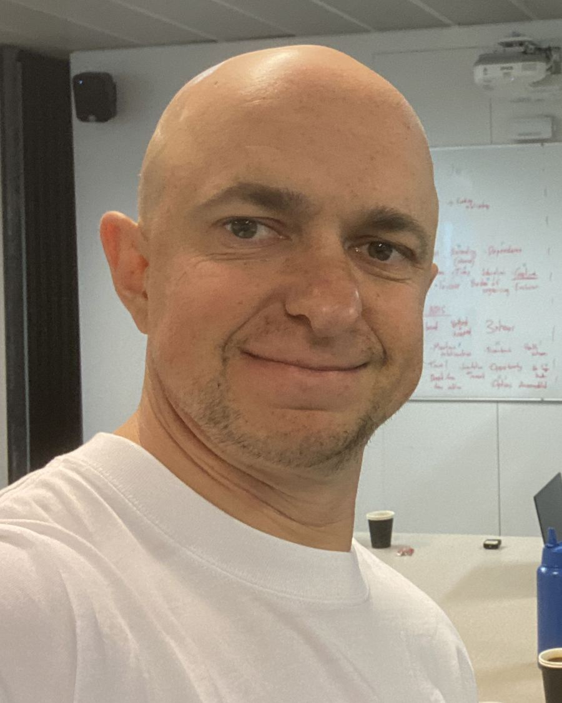
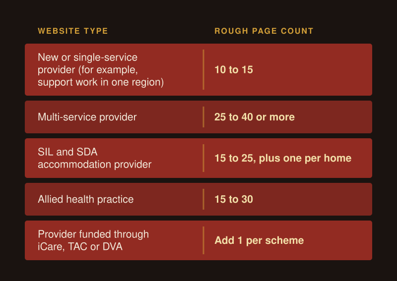
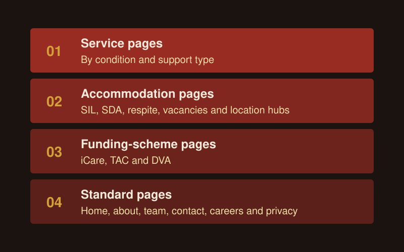
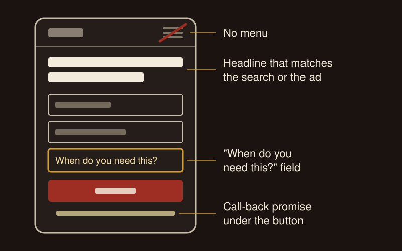

NDIS Website Design for Providers: Pages, Types and What to Include
Good NDIS website design gives every search and every referral a page that matches it. That means a page for each service and condition you support, a page for each suburb or home if you offer accommodation, two clear ways to get in touch, and real proof on every page. Plan the pages first, then design them.
I plan NDIS websites for providers Australia-wide. Your ads, search traffic and referrals all land on your website, so I treat it as the base of your NDIS marketing. My rule before any spend: "Nothing we drive traffic to should be broken."
What should an NDIS provider's website include?
An NDIS provider's website needs a page for each service and condition you support, proof from real people on every page, separate ways in for families and referrers, and clear funding and contact details. Use this checklist:
- A homepage that says who you support, where, and how to start, in the first screen on a phone.
- A page for each service or support type, such as SIL, community access, in-home support or therapy.
- A page for each condition you specialise in, such as spinal cord injury or acquired brain injury.
- A page for each suburb or region you serve, and one page per home if you offer accommodation.
- Real photos of your staff and your homes. No stock photos and no AI-generated people.
- Google reviews on every service page through a review widget, plus a short intro video from a staff member where you can get one.
- Two calls to action on pages both audiences read: one for families and participants, one for referrers ("Refer a participant").
- A referral form for professionals that asks what they need to tell you (funding type, support needs, hours, who is referring), and a short enquiry form for families with needs-based questions only.
- A plain funding line, such as "As a registered NDIS provider, we support self, plan and agency managed clients." Use it only if you are registered, because unregistered providers can only support self-managed and plan-managed participants.
- A tap-to-call phone number, tracked calls and form clicks, and a separate thank-you page, so you can count every enquiry.
- About and team pages with real names and faces.
- Its own page title and meta description on every page, with the service and suburb in the title and heading ("SDA Penrith").
- Written consent on file for every participant photo or story you publish.
- The NDIS logo only with written consent from the NDIA, and never the words "NDIS approved".
- Accessibility to the WCAG 2.2 AA standard: alt text on images, captions on video, readable text, and pages that work with a keyboard and a screen reader.
Reach out to discuss your NDIS website needs and I'll check your current site against this list.

How many pages does an NDIS website need?
The number depends on what you deliver and where. A single-service provider in one region needs about 10 to 15 pages. A multi-service provider across several regions can need 40 or more. Count one page for each service, condition, location and home, then add the standard pages.
| Website type | Pages it needs | Rough page count |
|---|---|---|
| New or single-service provider (for example, support work in one region) | Home, 2 to 4 service pages, about and team, reviews and stories, funding and how to start, a page for referrers, contact, careers, privacy | 10 to 15 |
| Multi-service provider | Home, a page per service, a page per condition, a page per region, a page for referrers, team, stories, funding, FAQ, careers, contact, privacy | 25 to 40 or more |
| SIL and SDA accommodation provider | Home, SIL, SDA, respite and short-term accommodation, a vacancies hub, one page per suburb, one page per home, a page for referrers, team, contact, careers | 15 to 25, plus one per home |
| Allied health practice | Home, a page per discipline (OT, physio, speech, psychology, behaviour support), a page per assessment or report type, a page per clinic, clinician profiles, wait times and intake, a page for referrers, contact, careers | 15 to 30 |
| Provider funded through iCare, TAC or DVA | Any of the above, plus one page per scheme that matches what your ads promise from the first line | Add 1 per scheme |
Thin service pages can't rank or give a visitor the confidence to book. My standard for a service page is 1,200 to 1,800 words with numbered sections, an FAQ aimed at the longer questions people search, and one consistent call to action. A paid landing page is shorter, 300 to 500 words.

How should you organise an NDIS website?
Organise it in four layers of page, and build the first layer first:
- Service pages by condition and support type.
- Accommodation pages: SIL, SDA, respite, vacancies and location hubs.
- Funding-scheme pages: iCare, TAC and DVA.
- Standard pages: home, about, team, contact, careers and privacy.

Condition pages beat a generic services page that repeats the boxes on your homepage. A spinal cord injury page gets few searches, so win the few that exist by saying plainly that you specialise in it.
For accommodation, group your listings under one page per suburb. That gives your team one clean link to send in outreach, groups your search results by area and makes enquiries easier to filter in your CRM. Each listing describes who the home suits and what daily life there looks like, with real photos of the home.
Who is an NDIS website written for?
Every NDIS website has two audiences: the people who use your support and the people who choose it or refer to it, such as parents, support coordinators, OTs and hospital discharge teams. Each needs a way in.
Referred families still check your site before they call, so write for what the person wants, in their words. "Consistent SIL support in [suburb]" says more than a headline about other providers letting people down, and copy that knocks other providers puts families and coordinators off.
Don't explain the problem to people living with it. A family looking for support after a brain injury knows what a brain injury is. Lead with empathy and proof on your service pages, and put the explainers in blog posts.
I run one test on every site: the 11th-hour Sunday test. A family searches on a phone late on a Sunday night. What do they find, and can they tell within seconds that you support people like them in their area?
What proof should be on every page?
Every main page needs real people, Google reviews and, where you can, a short intro video from a staff member. As I put it to one provider, "a really specific something is better than a generic something." An OT page carries reviews of that local OT. A home's page carries photos of that home.
A Google review widget set to show your best reviews looks more legitimate than testimonials typed into the page. Ask for reviews straight after a good moment, such as a smooth move-in, and ask referral partners where their organisation allows it.
Do NDIS ads need their own landing pages?
Yes. Send each search or ad to the page that matches it. A spinal cord injury search lands on the spinal cord injury page, and a location ad lands on that suburb's page.
Search is intent and social is interruption (with intent mixed in), so each gets its own landing page. A paid landing page has:
- No menu, so the visitor has one thing to do.
- A headline that matches the search or the ad.
- An answer within 10 seconds: is it available, is it local, is there capacity, and what happens next.
- A "When do you need this?" field and a call-back promise under the button.
- A separate thank-you page, so you can count every enquiry.
Build landing pages inside your own website so you own them. Your NDIS Google Ads and Facebook and Instagram campaigns then send traffic to pages you control.

Should you rebuild your NDIS website or fix the one you have?
Make the call before you spend on ads, and make a clear one. When I give a provider this advice, I tell them it needs to be rebuild or patch, "not a maybe".
Patch the site when the pages exist and load quickly, and the gaps are copy, proof and tracking. Rebuild when you can't add a page without paying a developer, the site breaks on a phone, or the layout can't take the pages in the table above. High maintenance fees often cost more over a year than a rebuild, so check what you pay.
Fix the technical problems before you pay for a big SEO retainer, and set up your Google Business Profile and tracking before you spend on any channel.
How does website design help NDIS SEO?
Each page you add is one more search you can be found for. A page for SDA in one suburb can rank for that suburb.
The basics come first: the suburb and service in the title and the main heading, and a different meta description on every page. I call duplicate descriptions "lazy page dev stuff". Then check whether ChatGPT and Google's AI answers mention you. Those tools favour pages that answer the question in the first two sentences, and they lean on your reviews and directory listings.
For the full search plan, see NDIS SEO.
How do I help with NDIS websites?
I plan the website as part of your growth plan, in this order:
- An outside-in audit of your current site: what a family and a referrer see on a phone.
- A written rebuild-or-patch call.
- A page plan for your provider type, with the page count and the order to build in.
- Copy and proof standards for every page, including both calls to action.
- Tracking: tap-to-call, form clicks, a thank-you page for every form, and the referral source on every enquiry.
- A separate quote for the build once the scope is clear.
I work with NDIS and aged care providers only, as a boutique NDIS marketing agency, so I plan your pages with the ads, SEO and referral work that will send people to them.
FAQ
How much does an NDIS website cost?
My team, or an expert I partner with closely, builds the site. I quote each build separately, after I've seen your current site and agreed the page plan, because the number of pages drives most of the work. A single-service provider needs about 10 to 15 pages, while an accommodation provider needs a page for every suburb and home on top of the standard pages. Reach out with your current site and I'll scope it.
Can I use the NDIS logo on my website?
Not without written consent from the NDIA. Its logo guidelines say nobody can use the NDIS logo on publicity or advertising without that consent. Registered providers can use the "I/we heart NDIS" or "I/we support NDIS" logos with the "Registered Provider" tagline. Never write "NDIS approved" or "100% NDIS funded", or suggest any link to the NDIA.
Can I put participant photos and stories on my website?
Yes, with written consent for that specific use from the participant or their guardian, given before you publish. A photo or story that shows someone's disability or health status is sensitive information under the Privacy Act, and the NDIS Code of Conduct requires you to respect participants' privacy. Staff photos and photos of your homes are a strong place to start.
Do I need a separate page for every suburb?
You need one where you have homes, vacancies or local ads in that suburb. A suburb page gives a local search and a location ad somewhere to land, and it groups your listings so your team has one link to send in outreach. Start with the suburbs where you have capacity now and add the rest as you grow.
Should my website have a separate referral form?
Yes. A support coordinator or discharge planner needs to tell you more than a family does: funding type, support needs, hours and who is referring. Give them their own form and a "Refer a participant" button. Keep the family enquiry form short, with needs-based questions only and nothing about plan budgets or diagnoses.
Reach out to discuss your NDIS website needs
Send me your current site and what you deliver, and I'll tell you which pages to build or fix first.